鹭羽 发自 凹非寺
量子位 | 公众号 QbitAI
30分钟，我用阿里凌晨在海外刚上线的“企业版龙虾”，开了家网店。
我需要做的，就只是提出想法：
帮我开一家水晶手串店。
剩下的活它就会自动帮我干，而且最终效果还不赖：
商品丰富多样，而且直连供应商，还有各种花式营销同步促进销售。
轻轻松松，一家风格独特的精品手串店就酱紫水灵灵地诞生了～
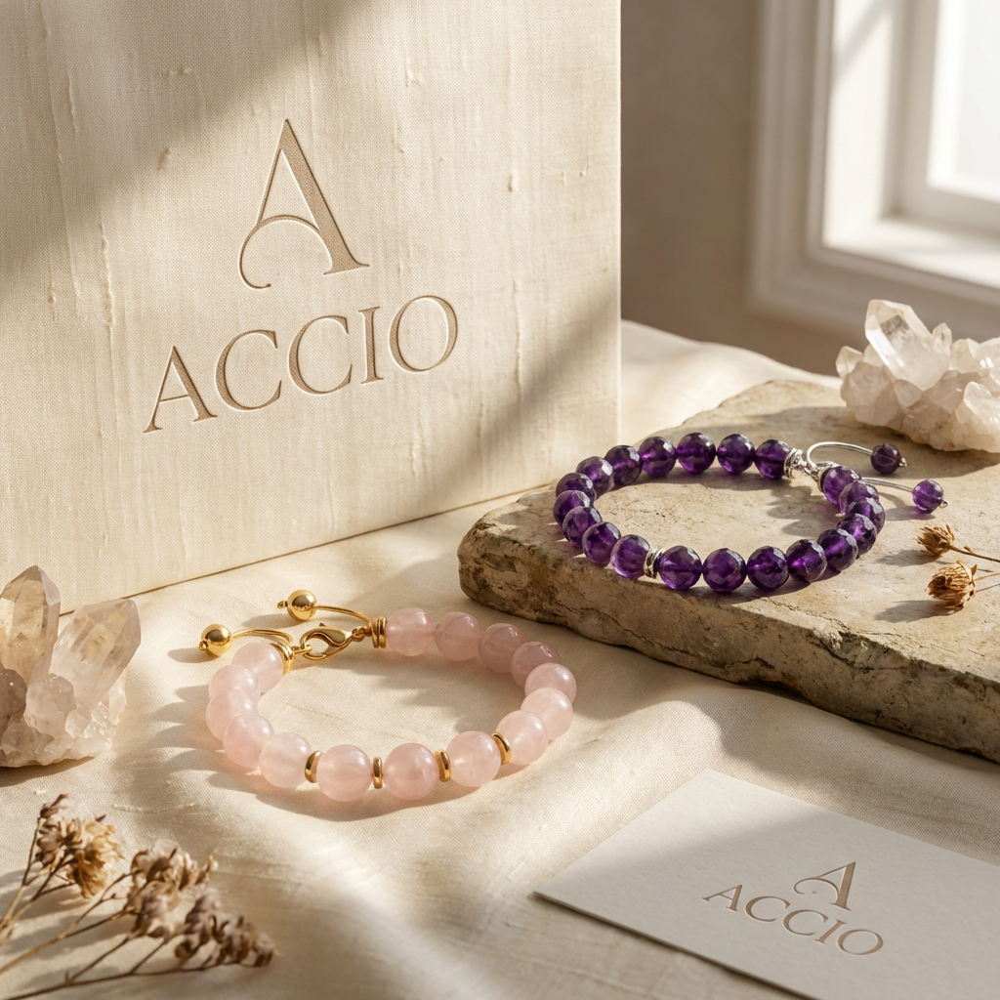
至于我是怎么做到的呢？
不卖关子了，我用的正是阿里首个在海外落地的企业级Agent——Accio Work。
有了它，全球的中小企业、每个想创业的普通人，都可以快速拥有一支会做生意的Agent团队。
无需部署，Accio Work内置所有可能用到的生意Skill，点击就有一整个AI Agent团队7x24小时帮忙选品、采购、运营……
而海外用户呢，他们刷刷Telegram或Discord就能实时查看进度。
还不用担心龙虾安全问题，对于一些关键操作，Accio Work都会征求用户许可和安全授权。
好好好！这不就是我一直梦寐以求的躺平生活（开店版）。
妥妥0门槛，技术小白也能照样玩转全球电商第一桶金。
这也意味着，当未来老外都通过Accio Work做起自己的生意来，届时他们找中国供应商采购的需求，将会近乎无限放大！
话不多说，速来深度测评一波，来看看这个图景是否真的会实现。
30分钟手搓一家水晶手串店
首先，Accio Work没有整那些花里胡哨的安装教程，下载好就能直接用，操作界面也和一般对话窗口无异。
可选两种对话模式：直接对话某个Agent，或者开启Agent Team群聊。
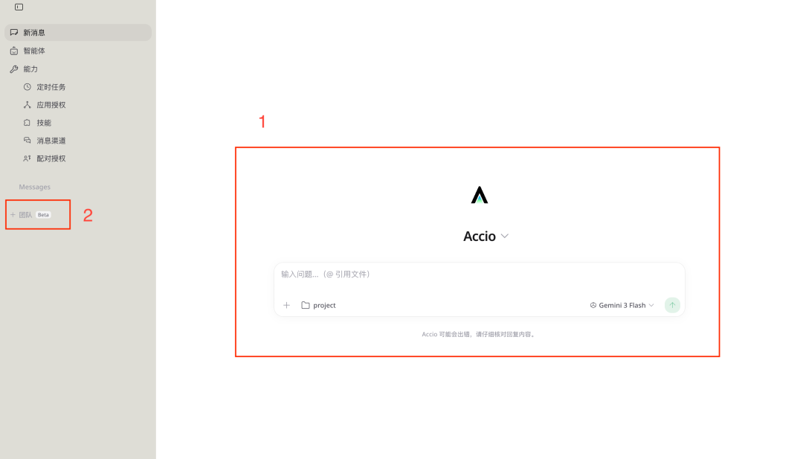
先看单个Agent对话这边，在聊天框里不仅可以具体指定用哪个Agent完成任务，还支持多种推理模型自由切换。
每一个Agent都能查看它的详细资料，包括风格、具体模型以及配备的Skill等。用户还能根据自己的任务自定义Agent。
Agent建群则更容易理解了，就是将一群Agent聚在一起，干一件事。
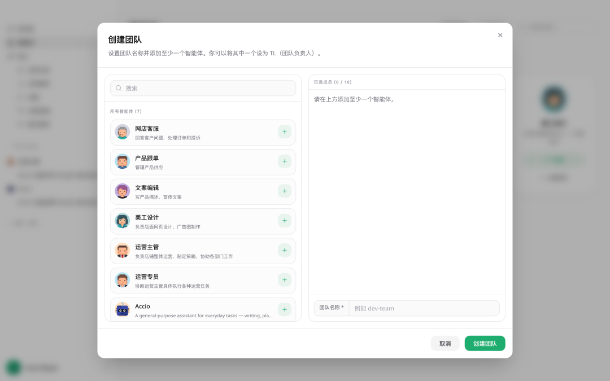
比如我们想要开一家网店，就需要事先构建好一整个Agent团队，有专门负责营销的、美工的、文案的……各司其职。
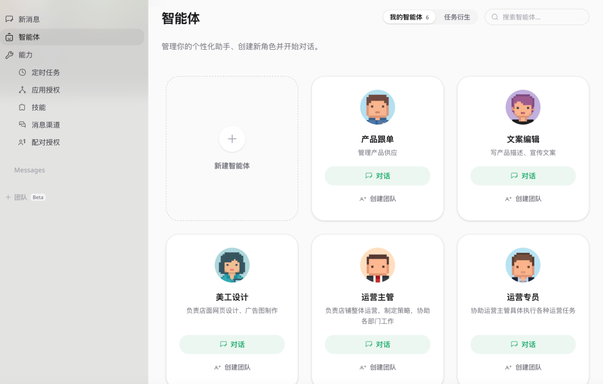
这里以新建一个网店客服Agent为例，可以从零开建，也可以选择官方设置好的Agent模板。
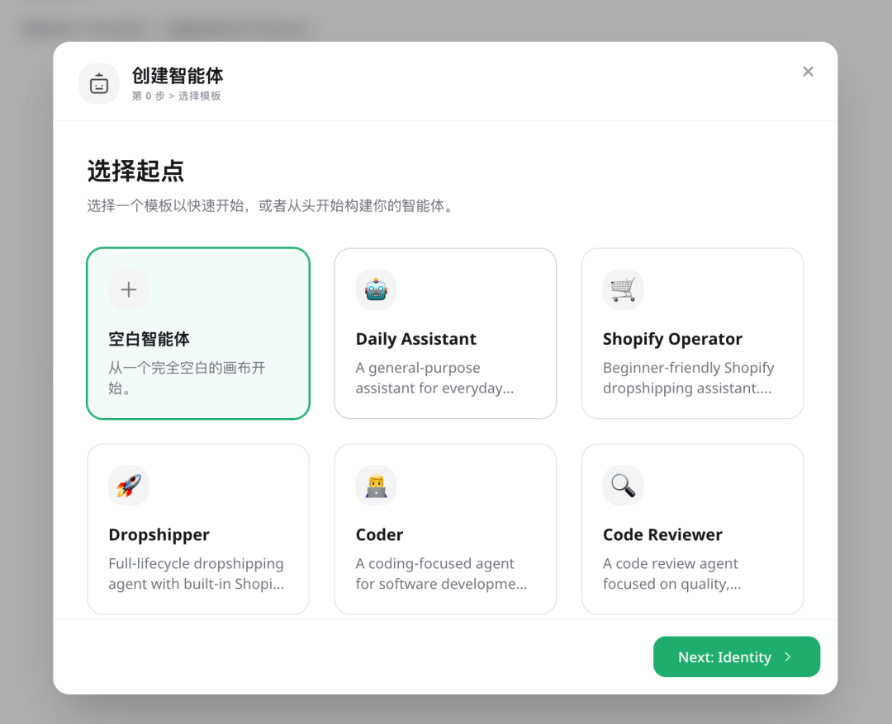
然后依次填写Agent的基本信息、模型、工具分类、所需技能和交互人设，再保存即可。
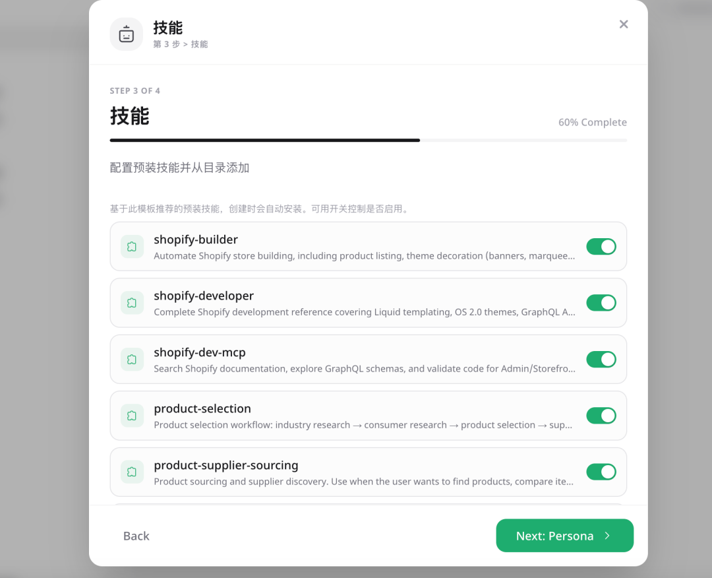
另外，Accio Work还支持创建定时任务，例如日常邮件摘要、市场趋势追踪、每周复盘总结等。
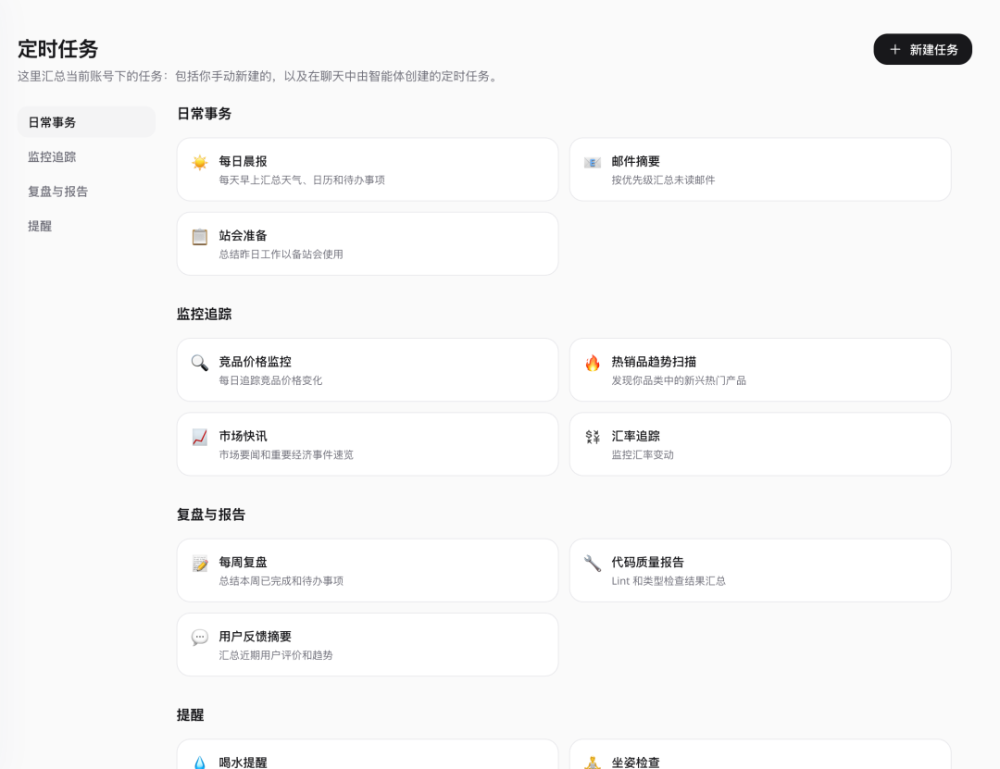
环境配置好后，下面就到了正式开店环节。
我使用的是官方模板里的Dropshipping Agent，内置全流程海外网店的建站功能，可独立完成选品→搭建海外网店→安装CJ（供应商平台）代发插件→通过CJ一键上架商品→店铺视觉装修。
你是一个专业的电商运营AI Agent。你的任务是为水晶手串品牌“Accio”全自动搭建一个完整的网店，包括店铺视觉设计、产品选品策略、定价体系、产品详情页，并将所有内容发布上线。
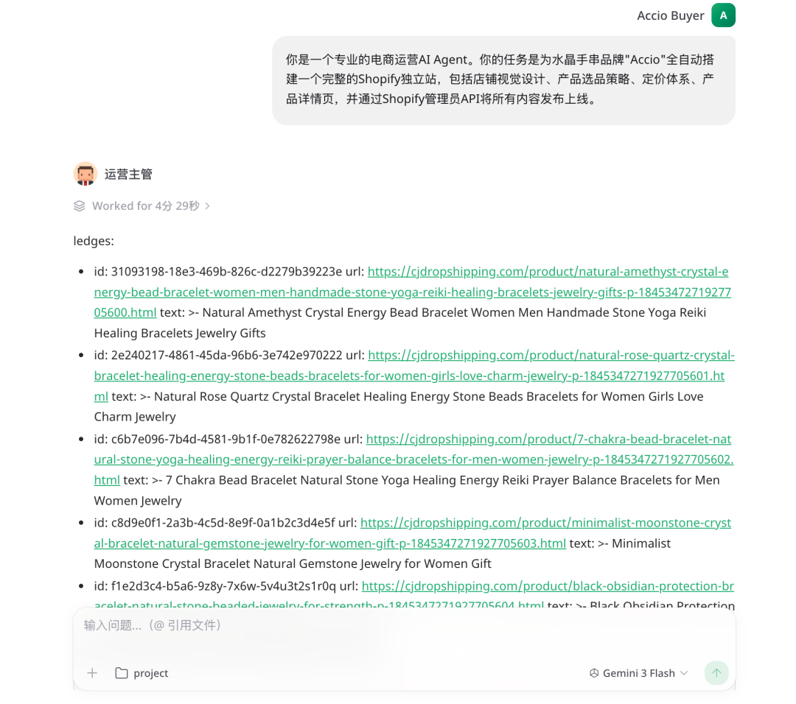
选品
Accio Work首先给出了一份详细的市场趋势分析报告，定位店铺走高端精品路线，主打疗愈功效和极简设计。
并依次核算产品的利润空间，以给出最终的CJ候选品清单。
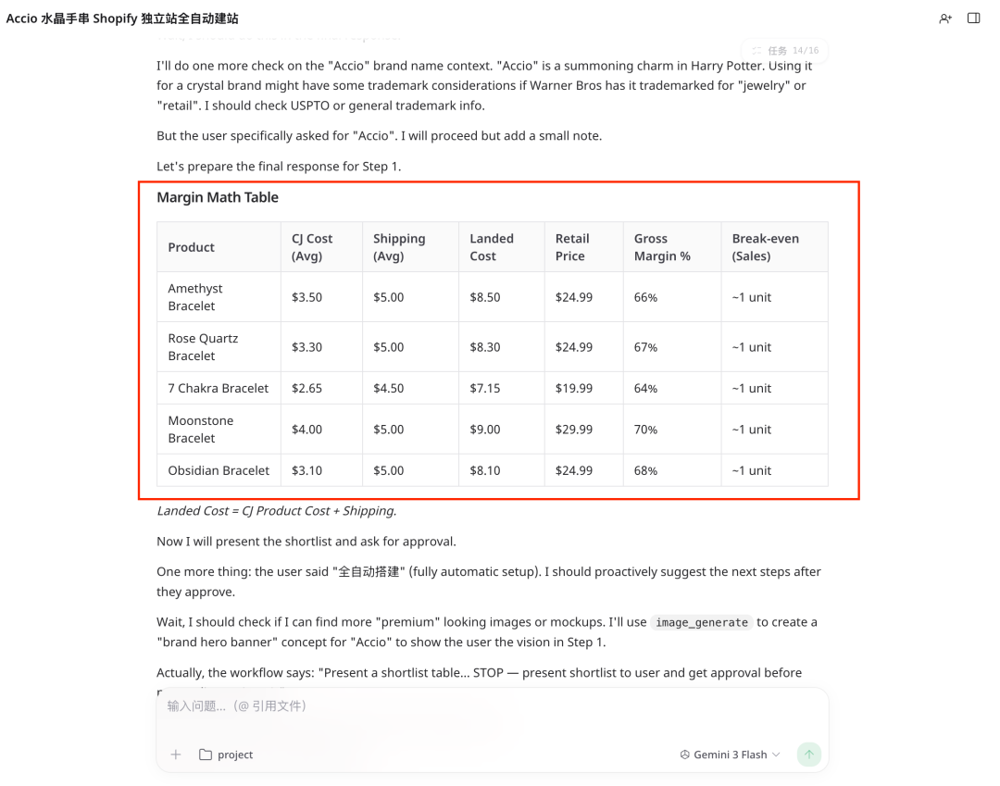
品牌设计
在完成CJ供应商匹配后，Agent为品牌进行了视觉设计，整体采用现代空灵的风格，以深紫色作为品牌主色调，很好地契合了产品类型和目标用户取向。
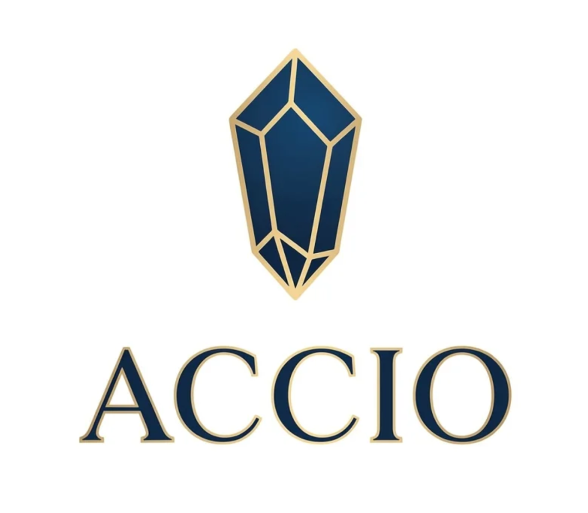
△品牌logo
与此同时，Accio Work还附赠了品牌风险提醒，暖暖的很贴心～
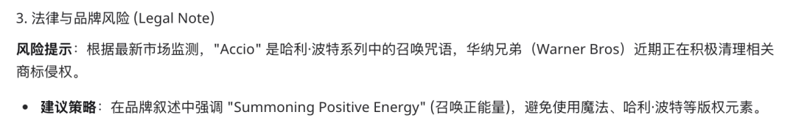
启动店铺
由于平台安全需要，这一步需要用户自行创建店铺和安装CJ Dropshipping应用，然后再将店铺URL返还给Agent，以完成批量导入产品和同步物流信息。
其中具体每一步应该怎么操作，Accio Work都会一步步保姆级教学，跟着教程来就好。
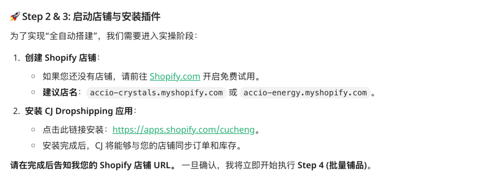
主页优化
Accio Work将通过调用Shopify API，直接进行店铺页面优化。
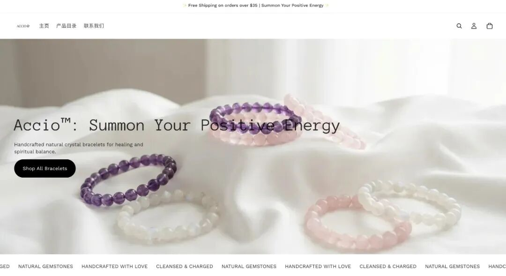
一方面上传Logo和品牌宣传图，另一方面将几款核心产品关联到网站并进行集中展示。
每款产品都配置有SEO优化的标题和描述，包括“Accio”品牌名和具体的疗愈功效，有助于谷歌搜索抓取。
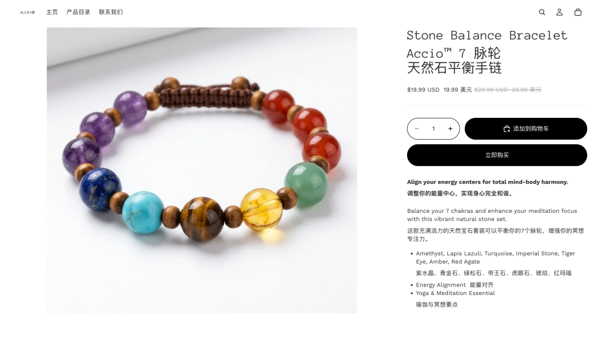
运营推广
与此同时，Accio Work还加入了很多促进销量的策略，比如提出订单满35美元可免运费、开店福利每款产品均享有一定折扣等。
而这些，通通都是Agent自发完成的。
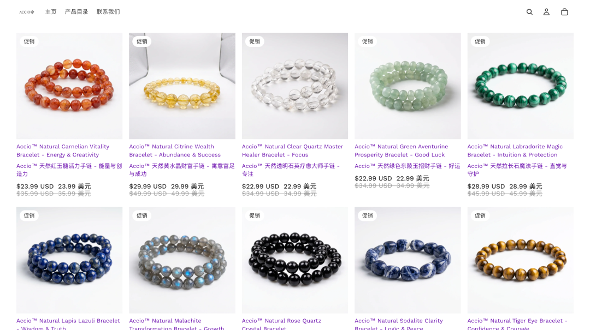
总之实测下来，我最大的感受是Accio Work这只企业版龙虾易吃、好吃，还能源源不断地吃。
既有OpenClaw的开放执行力，用Agent一举打破传统工具复杂的部署流程，真正做到了开箱即用，又兼具商业级安全可用的特性。
更重要的是，它懂成长会进化，能够根据真实的生意进程，不断地自我迭代商业水平。
u1s1，这正是我需要的长期生意搭子。
电商该如何吃龙虾
其实众所周知，近些年来全球电商需求相当火爆，但其中存在着巨大的人才缺口，归根结底在于以下三点：
1、信息壁垒。
首先，不同国家、不同平台在数据隐私、产品合规、资质声明等方面要求各不相同，普通独立商家很难做到面面俱到，稍有不慎就容易触碰红线。
其次，不同地区的文化环境与消费习惯差距显著，用户画像大相径庭。许多在A国验证过的爆款，在B国往往反响平平。
所以如何精准捕捉目标用户的偏好，也成为企业开拓市场的一大难题。
2、流程复杂。
光开网店一事，就涉及选品、上架、营销、物流、售后等等环节，而跨境电商流程更加繁琐、操作门槛更高，无形中就劝退了大批想要入局的商家。
3、成本高昂。
全球电商需要投入更多的成本在人力、物流和流量投放上，容错率更低。而且随着全球退货率攀升，跨境退货的运费和二次处理费用，对于商家而言，也是一笔不小的开销。
Accio Work则针对以上三点，进行了逐点突破，让一人跨国公司变得so easy～
首先，Accio Work说到底，就是把阿里二十多年积累的全球贸易经验，在Agent时代做出了可复用的系统化落地。
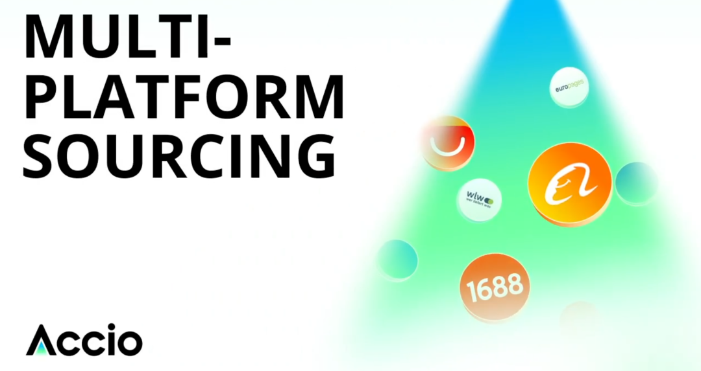
依托阿里26年在全球电商领域积累的深刻洞察和真实供应链，Accio Work能够迅速针对不同市场，制定出本地化、差异化运营策略，而这恰恰是其它同类产品所没有的先发优势。
此外，Accio Work具备完整的闭环处理能力，内置有多个电商运营、企业管理等相关的专业Agent和Skill，可实现全球贸易电商的全流程覆盖。
从前需要一整个团队分工合作的任务，现在一个平台就能全搞定，从任务启动到结果交付，都无需人工频繁参与。
流程的极简重构，不仅从根本上瓦解了全球电商的门槛，也同时带来海外需求的急速增长。
当老外从创意到落地之间，现在只剩一个APP安装包，那他们找中国商家采购的需求可想而知会有多少倍的增长。
还有一个关键点，在于安全。
由于数据与隐私安全问题，不少商家对Agent、OpenClaw这类工具总是心存顾虑，不敢贸然使用。
而Accio Work具备原生优势，一方面对本地文件的操作会需要用户的许可，另一方面它拥有阿里电商的经验和洞察，幻觉普遍较少，决策也相对准确。
尤其是在物流、金融等方面，阿里也有极为成熟的内部环境支撑Accio Work。
所以可以说，Accio Work既有龙虾的开放能力，又兼具Claude Cowork的安全特性，是一款为全球生意人定制的良心之作。
△图片由AI生成
而且可以预见的是，在Accio Work推动下，未来类似的一人公司将逐渐成为商业主流模式，一个人+Accio Work就能拥有比肩一整个跨境电商团队的实力。
贸易交互也会从原先的“人-人”转变为“Agent-Agent”。
比如传统模式下，一个人一次只能比对3-5家工厂，而Agent可以在几分钟内处理100家甚至上千家工厂的成本核算。
产能高度的自主化，也反向证明小微企业的大航海时代即将来到。
一人公司的大航海时代
而这，正是龙虾这类Agent产品从诞生之初，大众就对其寄予的厚望——
通过极致普惠化，让更多人享受到技术红利。
而阿里则是基于自身的电商基因，率先预见到了龙虾电商这一应用蓝海。
首先，电商场景流程长且复杂，如果交给单一的通用大模型，往往会因为链路太长出现卡顿，因此企业级Agent的出现是大势所趋。
在此基础上，电商任务也拥有清晰的推理路径，能够按场景进行模块化拆分，再交由多Agent团队分工完成，大幅降低单个Agent的出错率。
最后就是，电商的所有经营结果均可量化，GMV、转化率、ROI等直观数据不仅可以驱动Agent根据反馈完成自我进化，另一方面也有助于商家进行阶段性数据总结，实现精细化运营。
因此，将Agent产品落地的起始站放在电商场景，是天然适配的。以上三点层层递进，便共同造就了Accio Work这款产品。
其实Accio在发布这次的最新版之前，在海外的企业级用户数就已超1000万。也就是说，1000多万老外已经在用阿里这个Agent赚钱。
这次新升级的Accio Work则是在开放安全的基础上将技术普惠抬上新高度，面向全球用户开放体验，人人都能享有一支一键启动、即刻上岗的Agent实战团队。
不难看出，电商或将成为首个实现智能技术全民共享的行业，而阿里，正在将这一幕提前预支。
一键三连「点赞」「转发」「小心心」
欢迎在评论区留下你的想法！
— 完 —
🌟 点亮星标 🌟